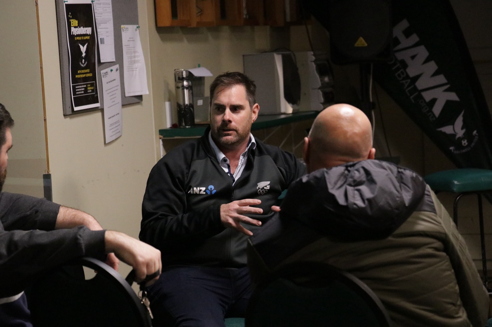

THE PERFORMANCE ACT
Evidence-based sport psychology in Christchurch and across Aotearoa, New Zealand — helping athletes, coaches, and whānau perform and grow.
Sport psychology is the science of the mind in performance. We help you train focus, confidence, and resilience the same way you train your body — with practical, evidence-based tools that carry from the field into everyday life.

Based in Canterbury, we work face-to-face with athletes, teams, coaches, and whānau right across Christchurch. From club sport to high-performance environments, our registered psychologists bring practical mental skills training into the places where you already train and compete.
Whether you’re managing performance anxiety, rebuilding confidence after a setback, or looking to sharpen your focus under pressure, we’ll build support that fits you, your sport, and your goals.
BOOK A CHRISTCHURCH SESSIONDistance is no barrier. Alongside our in-person work in Christchurch, we support athletes, coaches, and teams throughout New Zealand online — from Auckland to Otago and everywhere between. Our secure video sessions and the GROW digital platform mean world-class mental skills support is available wherever you are in Aotearoa.
We partner with clubs, schools, and sporting organisations nationwide to embed lasting psychological skills across their environments — not just for the elite few, but for everyone who plays.
EXPLORE OUR PROGRAMSPractical, evidence-based skills for athletes at every level.
Attention and concentration skills that hold up under pressure, so you can stay locked into the moment that matters.
Tools to navigate setbacks, manage performance anxiety, and bounce back stronger — on and off the field.
Build durable self-belief and a clear connection to purpose that fuels consistent, motivated performance.
Every great partnership starts with a conversation. Get in touch for a free, no-pressure kōrero about how sport psychology can support your world.